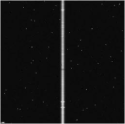
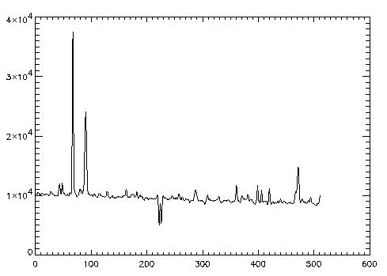
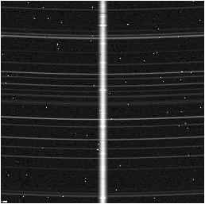
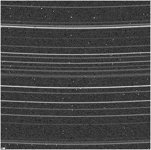
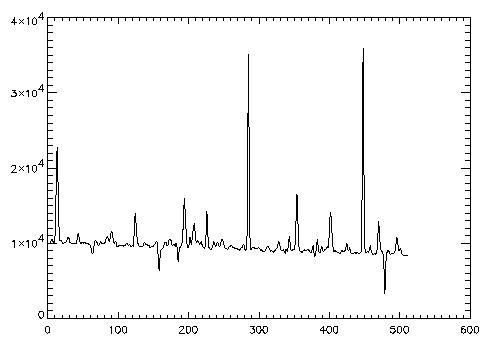
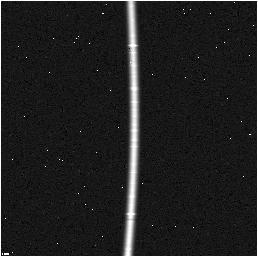
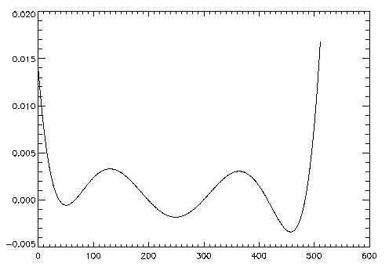

variance = abs(Data) / Gain + ReadNoise ^ 2
as a good estimate, where gain is in units of electrons per data number (EPADU) and ReadNoise is in units of electrons. The spatial bounds are pixel locations in the horizontal direction. Only data between the bounds contribute to the final spectrum. All pixels in the vertical direction contribute to the spectrum. The bounds should be set widely because the algorithm minimizes the influence of noisy pixels far from the peak of the profile.
If part of your preprocessing is sky subtraction (e.g., in the infrared), set skyvarim and rnsky to the sky variance image and sky read noise, respectively. These values will be added to the variance image as it is refined to reflect the increase in noise attributed to sky subtraction.
The importance of an accurate variance image can not be overstressed. The variance image is used to calculate which pixels are off because of noise, and which are cosmic rays. It is also used to weight the pixels for the final optimal extraction. To accuratly predict the noise of the data, the skyvarim must include noise estimates for all pre-processing steps that might introduce noise. Any noise source must be included except read noise for the data image and photon noise from the calculated background and object spectrum. If the data have additional noise sources that are not represented, the routine will mask good pixels. If it overestimates noise sources, cosmic rays can slip through, and the final spectrum will be inaccurate.
Trim out any bad regions where spectrum extraction is impossible, such high-variance or unilluminated areas. If that is not possible, then mask off that area, or make sure the variance image is correspondingly high. Otherwise the routine will incorrectly try to fit these data.
1. Frame with flat background and perpendicular trace
This is the most basic case. First, read the FITS file:
IDL> frame1 = readfits('ex1.fits', header1)
Next, locate the read noise and gain levels for the CCD array.
This FITS file contains that information in the header.
IDL> Q = sxpar(header1, 'EPADU') IDL> rn = sxpar(header1, 'RDNOISE') / QNow, we need to select the object spectrum limits. This can be done interactively using a plot of the frame. The trace is perpendicular, so any row will do.
IDL> plot, frame1[*,0] IDL> plot, frame1[200:300,0]It seems the spectrum spans columns 240 to 270.
IDL> x1 = 240 IDL> x2 = 270Now we need to prepare the data and variance images. Since there is no sky frame, the data image is the object frame. The inital estimate for the variance image is easily calculated.
IDL> dataim = frame1 IDL> varim = abs(frame1) / Q + rn^2With all of the data now prepared, run optspecextr.
IDL> opspec1 = optspecextr(dataim, varim, rn, Q, x1, x2) IDL> plot, opspec1 
2. Object and Sky Frames
When working with infrared data where a sky frame is to be used for sky subtraction, that information needs to be passed on to the optimal extraction procedure.
The preparation is identical to Example 1.
IDL> objframe2 = readfits('ex2obj.fits', objheader2)
IDL> skyframe2 = readfits('ex2sky.fits', skyheader2)
IDL> Q = sxpar(objheader2, 'EPADU')
IDL> rn = sxpar(objheader2, 'RDNOISE') / Q
IDL> rnsky = sxpar(skyheader2, 'RDNOISE') / Q
IDL> x1 = 240
IDL> x2 = 270
The data image is object frame - sky frame. An additional sky
variance image must also be created. The initial variance estimate
must reflect the additional image processing step.
IDL> dataim = objframe2 - skyframe2 IDL> skyvar = abs(skyframe2) / Q + rnsky^2 IDL> varim = abs(skyframe2 + objframe2) / Q + rnsky^2 + rn^2The call for optspecextr uses the SKYVARIM keyword:
opspec2 = optspecextr(dataim, varim, rn, Q, x1, x2, $ skyvar=skyvar) IDL> plot, opspec2  
3. Frame with Curved Trace
A frame with a curved trace cannot fit the profile using a polynomial fit along the wavelength dimension because the trace intercepts some columns more than once and is poorly fit by a polunomial. Instead try either the boxcar filter or Gaussian fit.
The preparation begins as above:
IDL> frame3 = readfits('ex3.fits', header3)
IDL> Q = sxpar(header3, 'EPADU')
IDL> rn = sxpar(header3, 'RDNOISE') / Q
However, the curved trace makes setting spectrum limits more
difficult. Take a look at the frame to get the general idea.
IDL> tv, frame3The minimum occurs and the top and bottom of the frame, while the maximum occurs about halfway down the frame.
IDL> plot, frame3[200:300,0] IDL> plot, frame3[200:300,255] IDL> plot, frame3[200:300,511]It spans from about 240 to 280.
IDL> x1 = 240 IDL> x2 = 280Now run optspecextr with either the FITGAUSS or FITBOXCAR keyword.
IDL> dataim = frame3 IDL> varim = abs(frame3) / Q + rn^2 IDL> opspec3gauss = optspecextr(dataim, varim, rn, Q, x1, x2, $ /fitgauss) IDL> dataim = frame3 IDL> varim = abs(frame3) / Q + rn^2 IDL> opspec3rsa = optspecextr(dataim, varim, rn, Q, x1, x2, $ /fitboxcar)
4. Straightening the Trace
A curved frame may also be corrected using the straightening. This technique upsamples the data frame by 7 pixels, shifts each row by an estimated center correction. Then the usual fitting methods can be used to fit the expanded data. Before use the profile is downsampled.
The preparation begins just like before.
IDL> frame4 = readfits('ex4.fits', header4)
IDL> Q = sxpar(header4, 'EPADU')
IDL> rn = sxpar(header4, 'RDNOISE') / Q
In order to show the correction more clearly this frame is only curved
in the x direction. The shift4.fits file contains the shift amount
IDL> traceact = readfits('shift4.fits')
IDL> plot, traceact
It seems to span from 235 to 270
IDL> x1 = 235 IDL> x2 = 270Now run optspecextr with adjfunct keyword equal to adjgauss. This will tell the program to send the data frames to adjgauss before smoothing the profile. Adjparms.centerest returns the estimated shift amount. With the expantion, straightening may take much longer than other techniques.
IDL> dataim = frame4
IDL> varim = abs(frame4) / Q + rn^2
IDL> adjfunc = adjgauss
IDL> opspec4 = optspecextr(dataim, varim, rn, Q, x1, x2, $
adjfunc=adjfunc, adjparms=adjparms)
IDL> plot, adjparms.centerest
IDL> plot, (adjparms.centerest - 4) - traceact
